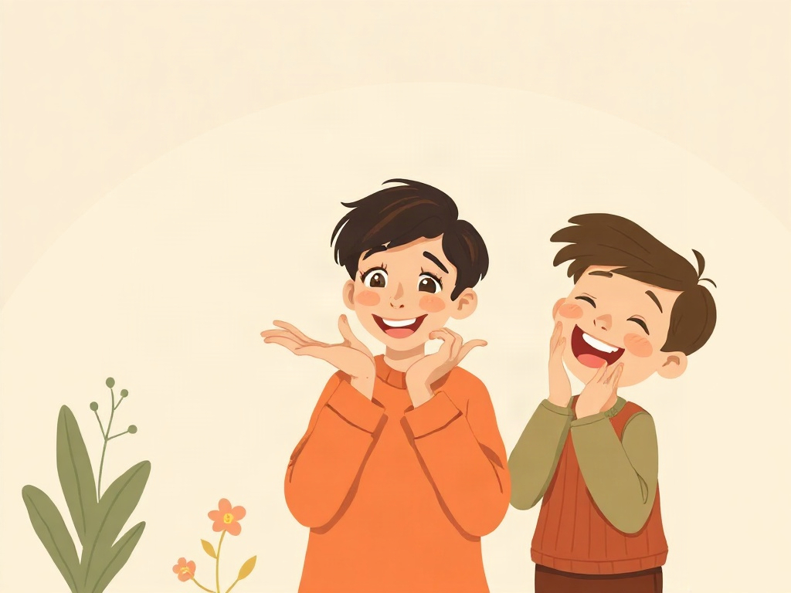
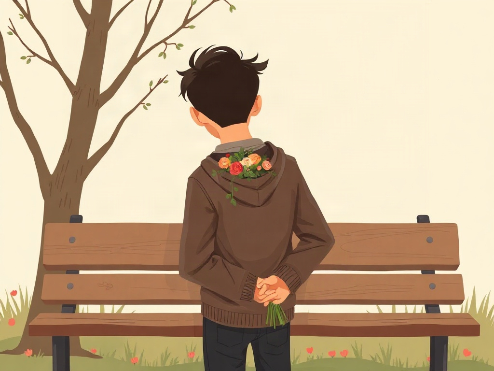
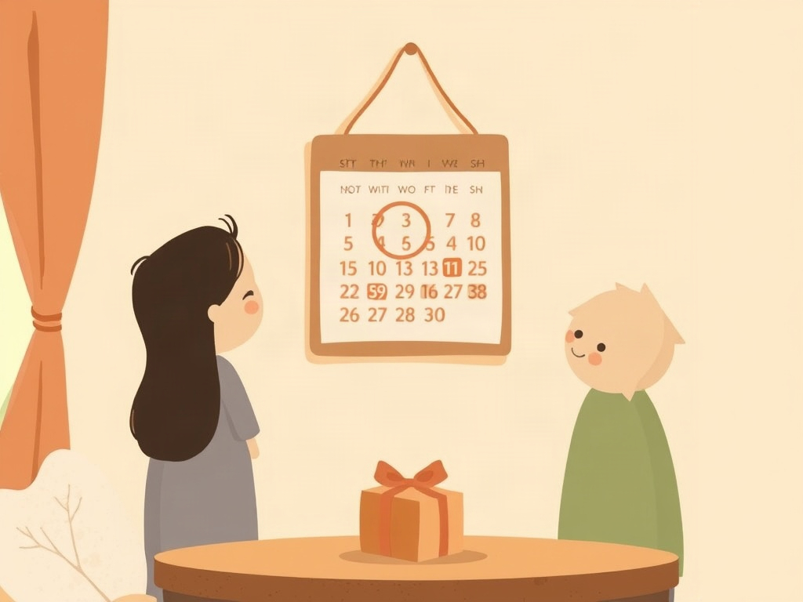
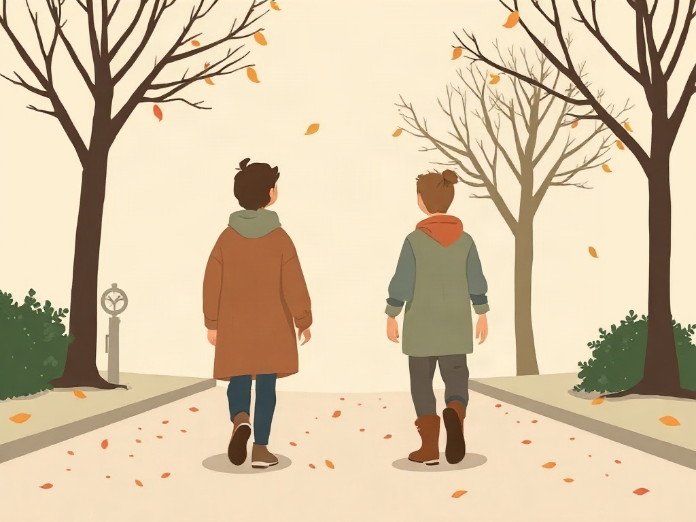

만남 · Meeting소개팅
요즘 친구가 소개팅을 많이 해요.
My friend goes on a lot of blind dates these days.
Fourteen dating words along one arc: someone introduces you, nothing has a name yet, somebody finally says it.
1See the picture2Say the Korean out loud3Tap to check & Listen
요즘 친구가 소개팅을 많이 해요.
My friend goes on a lot of blind dates these days.
회사 선배가 소개해 준 사람이랑 데이트를 했어요.
I went on a date with someone a senior at work introduced to me.
두 사람은 아직 사귀지 않지만 썸을 타고 있어요.
The two of them aren't dating yet, but they're in the talking stage.

애교가 많은 사람도 있고 없는 사람도 있어요.
Some people have a lot of aegyo and some don't.

고백하고 싶은데 너무 떨려서 말을 못 했어요.
I wanted to confess, but I was so nervous that I couldn't say it.
어제 고백을 받아서 오늘부터 사귀기로 했어요.
I received a confession yesterday, so we decided to start dating today.

다음 주가 백 일이라서 선물을 준비하고 있어요.
Next week is our hundredth day, so I'm preparing a present.

오래 만났지만 결국 헤어졌어요.
We were together a long time, but in the end we broke up.
The questions a Korean friend would actually ask back. Answer aloud, then tap to compare.
사귀기 전에 서로 좋아하는 것 같은 단계예요. 영어로는 딱 맞는 말이 없어요.
It's the stage before dating where you both seem to like each other. There is no exact English word.
고백은 마음을 말하는 순간이고, 사귀다는 그다음부터 시작하는 관계예요.
Gobaek is the moment you say how you feel; sagwida is the relationship that starts after it.
처음 만난 날부터 날짜를 세기 때문에 백 일이 중요한 날이 돼요.
Because the days are counted from the first day you met, so day 100 becomes a real milestone.
딱 맞는 단어가 없어서 보통 그냥 애교라고 해요. 귀엽게 행동하는 거예요.
There is no exact word, so people usually just say aegyo. It means acting cute.
보통 친구나 회사 선배가 두 사람을 소개해 줘요.
Usually a friend or a senior at work introduces the two people.
밀고 당기기예요. 관심 있는 것처럼 하다가 조금 멀어지는 거예요.
It is "push and pull": acting interested, then pulling back a little.
Tap ▶ to hear each word. Use Hide English to test the meaning, or Hide Korean to produce the word yourself.
요즘 친구가 소개팅을 많이 해요.
My friend goes on a lot of blind dates these days.
회사 선배가 소개해 준 사람이랑 데이트를 했어요.
I went on a date with someone a senior at work introduced to me.
두 사람은 아직 사귀지 않지만 썸을 타고 있어요.
The two of them aren't dating yet, but they're in the talking stage.
애교가 많은 사람도 있고 없는 사람도 있어요.
Some people have a lot of aegyo and some don't.
고백하고 싶은데 너무 떨려서 말을 못 했어요.
I wanted to confess, but I was so nervous that I couldn't say it.
어제 고백을 받아서 오늘부터 사귀기로 했어요.
I received a confession yesterday, so we decided to start dating today.
다음 주가 백 일이라서 선물을 준비하고 있어요.
Next week is our hundredth day, so I'm preparing a present.
오래 만났지만 결국 헤어졌어요.
We were together a long time, but in the end we broke up.
Q. 썸이 뭐예요?
What is sseom?
A. 사귀기 전에 서로 좋아하는 것 같은 단계예요. 영어로는 딱 맞는 말이 없어요.
It's the stage before dating where you both seem to like each other. There is no exact English word.
Q. 고백하고 사귀다가 어떻게 달라요?
How are gobaek and sagwida different?
A. 고백은 마음을 말하는 순간이고, 사귀다는 그다음부터 시작하는 관계예요.
Gobaek is the moment you say how you feel; sagwida is the relationship that starts after it.
Q. 한국에서는 왜 백 일을 챙겨요?
Why do Koreans celebrate the 100th day?
A. 처음 만난 날부터 날짜를 세기 때문에 백 일이 중요한 날이 돼요.
Because the days are counted from the first day you met, so day 100 becomes a real milestone.
Q. 애교를 영어로 어떻게 말해요?
How do you say aegyo in English?
A. 딱 맞는 단어가 없어서 보통 그냥 애교라고 해요. 귀엽게 행동하는 거예요.
There is no exact word, so people usually just say aegyo. It means acting cute.
Q. 소개팅은 누가 시켜 줘요?
Who sets up a sogaeting?
A. 보통 친구나 회사 선배가 두 사람을 소개해 줘요.
Usually a friend or a senior at work introduces the two people.
Q. 밀당이 무슨 뜻이에요?
What does mildang mean?
A. 밀고 당기기예요. 관심 있는 것처럼 하다가 조금 멀어지는 거예요.
It is "push and pull": acting interested, then pulling back a little.